What is Tile 9 (Pai Gow, Pai Gao)?
It is a game played mainly in Greater China, using nine tiles (Tian Jiu Tile).
In the United States, they are also called "pai gow tiles" to distinguish them from pai gow poker.
It has also been introduced to some casinos.
basic rule
It consists of 32 tiles of 21 different types with a design resembling two dice arranged in a row,
characterized by the red eyes of 1 and 4.
Japanese playing cards (12 suits of 4 cards, each suit repr. a month indic. by a letter)
Of the total of 32 tiles, 11 have two tiles each with exactly the same pattern (22 tiles in total). These are called "bun tiles" or "bunzi".| Card | Name | English | Namber | Introduction |
|---|---|---|---|---|
 |
Tempai | Teen | 12 | 6 red, 6 white. It represents the 24th day of the month, which symbolizes the heavens. It is the highest in rank in the Bunpai. |
| 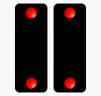 | Jipi | Day | 2 | 2 red. It symbolizes the four directions of the north, south, east and south of the earth. |
| 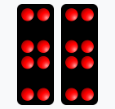 | paternity | High 8 | 8 | 8 red. It symbolizes the moral character of a person, such as benevolence, loyalty, and faithfulness. |
 |
Japanese cup and lungs | High 4 | 4 | 1 red, 3 white. It symbolizes the eight festivals (Spring Festival, Lantern Festival, Qing Ming, Dragon Boat Festival, Mid-Autumn Festival, Mid-Autumn Festival, Chung Yuan Festival, and Winter Solstice Festival). |
| 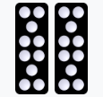 | Buy-sell, buy-sell | High 10 | 10 | 10 white. Ume blossoms are decorated with symbols. |
 |
Mr. Cho-san, Mr. Cho Hyo-hai, and Mr. Cho Shan | High 6 | 6 | 6 white. |
 |
many, many points | Low 4 | 4 | 4 white. (without a backrest) because of its resemblance to a wooden seat. |
 |
Futou, this | 11 | 11 | 11 white. |
| 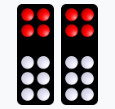 | high, white, and sickly. | Low 10 | 10 | 4 red, 6 white. |
 |
high and low | High 7 | 7 | 1 red, 6 white. |
|
absolute, orderly, and continental | Low 6 | 6 | 1 red, 5 white. |
Wen Pai
Out of the total of 32 tiles, the 10 types (one each), excluding the 22 statement tiles, are called wu tiles or wuzi. Wu tiles are classified according to the sum of their eyes.| Card | Name | English | Namber | Introduction |
|---|---|---|---|---|
| 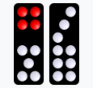 | Zack | 9 | 9 | Two types. One has 4 red points and 5 white points, the other has 9 white points. |
 |
roughly | Low 8 | 8 | Tow types. Both are white 8-points, but the arrangement is different. |
 |
Zasshichi | Low 7 | 7 | Tow types. One has 4 red points and 3 white points, the other has 7 white points. |
 |
Zatsugo | 5 | 5 | Tow types. One is five red points and the other five white points. |
| 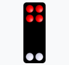 | Ni, Koroku, Dairoku, Otoriro | Gee Joon | 6(or3) | One of the supreme tiles. A chameleon tile that can be used as a 6 or as a 3. |
 |
Tei-san, Sai-san, Dai-san, Kou-san, Mokei-san | Gee Joon | 3(or6) | One of the supreme tiles. A chameleon tile that can be used as a 3 or as a 6. |
Order of Roles
A hand consists of two tiles, either a pair or a pair of pairs. The yaku of pairs up to the 16th rank are especially called BO.| Order | Card | Name | English | Introduction |
|---|---|---|---|---|
| top-ranking |  |
astigmatism | Geen Joon | It consists of Ding 3 and 24. Each is the weakest tile, but the highest in the pair. |
| Second place |  |
firmament | Teen | pair of mahjong tiles |
| Third place |  |
amphibious | Day | pair of tiles on the ground |
| 4th Place |  |
pair of persons (esp. male and female) | Yun | man-tile pair |
| Fifth place |  |
Shuanghe | Gor | winning tile pair |
| 6th Place |  |
double plum | Mooy | Pair of Umehana Tile |
| Seventh place |  |
Double length | Chong | A pair of long triplets |
| 8th Place |  |
double board | Bon | A pair of board tiles |
| 9th Place | 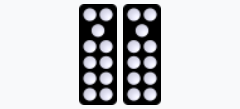 | double ax | Foo | A pair of axe-heads |
| Tenth place | 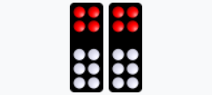 | double red head | Ping | Pair of Red Head Tiles |
| 第11位 | 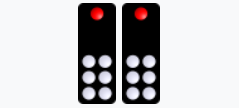 | double red head | Tit | A pair of high-footed seven-tile |
| 12th Place | 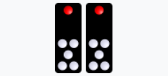 | Shuangling | Look | Pair of Melody Six Tiles |
| 13th Place | 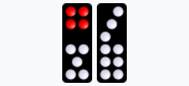 | Miscellaneous | Gow | A pair of miscellaneous nine-tile tiles |
| 14th place |  |
miscellaneous | Bot | Pairs of eight miscellaneous tiles |
| 15th Place |  |
miscellaneous | Chit | Pair of miscellaneous seven-tile tiles |
| 16th Place |  |
miscellaneous five | Ng | A pair of miscellaneous five-tile tiles |
| 17th Place | 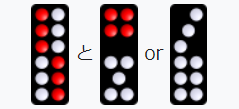 | king, king | Wong | A heavenly tile is a combination of 12 and 9 |
| 18th Place |  |
king | Wong | A ground tile is a combination of two and nine. |
| 19th Place |  |
bar, sky bar | Gong | Tenkong is a combination of 12 and 8 |
| No. 20 | 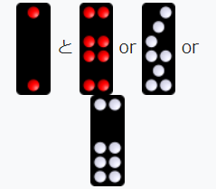 | bar, ground bar | Gong | A land kong is a combination of two and eight |
| 21st Place | 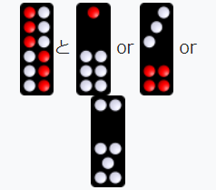 | High Nine, Sky High Nine | High 9 | Tenko ko nine is a combination of 12 and 7 |
| 22nd Place |  |
high nine | High 9 | Earth height 9 is a combination of 2 and 7 |
-
Bo > Wong > Gong > High 9 > No Hand